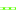

<!doctype html>
<html lang="en">
    <head>
        <meta charset="utf-8">
        <meta http-equiv="X-UA-Compatible" content="IE=edge">
        <meta name="viewport" content="initial-scale=1,user-scalable=no,maximum-scale=1,width=device-width">
        <meta name="mobile-web-app-capable" content="yes">
        <meta name="apple-mobile-web-app-capable" content="yes">
        <link rel="stylesheet" href="css/leaflet.css" />
        <link rel="stylesheet" href="css/label.css" />
        <link rel="stylesheet" href="css/MarkerCluster.css" />
        <link rel="stylesheet" href="css/MarkerCluster.Default.css" />
        <link rel="stylesheet" href="css/leaflet.draw.css" />
        <link rel="stylesheet" href="css/leaflet.measurecontrol.css" />
        <script src="js/leaflet.js"></script>
        <script src="js/OSMBuildings-Leaflet.js"></script>
        <script src="js/leaflet-hash.js"></script>
        <script src="js/label.js"></script>
        <script src="js/Autolinker.min.js"></script>
        <script src="js/leaflet.draw.js"></script>
        <script src="js/leaflet.measurecontrol.js"></script>
        <script src="js/leaflet.markercluster.js"></script>
        <style>
        #map {
            width: 800px;
            height: 600px;
        }
        </style>
        <title>GeoWing Mapping Project</title>
    </head>
    <body>
        <div id="map">
        </div>
        <script src="data/json_Features1.js"></script>
        <script>

        L.ImageOverlay.include({
            getBounds: function () {
                return this._bounds;
            }
        });
        var map = L.map('map', {
            measureControl:true,
            zoomControl:true, maxZoom:27, minZoom:1
        }).fitBounds([[37.4768205371,-122.174377987],[37.480020366,-122.168743393]]);
        var hash = new L.Hash(map);
        var feature_group = new L.featureGroup([]);

        
        var raster_group = new L.LayerGroup([]);
        layerControl = L.control.layers({},{},{collapsed:false});
        var img_OrthoImagery0 = 'data/json_OrthoImagery0.png';
        var img_bounds_OrthoImagery0 = [[37.4774684695,-122.174042502],[37.4794135363,-122.168675803]];
        var overlay_OrthoImagery0 = new L.imageOverlay(img_OrthoImagery0, img_bounds_OrthoImagery0);
        raster_group.addLayer(overlay_OrthoImagery0);
        function pop_Features1(feature, layer) {
            layer.on({
                mouseout: function(e) {
                    layer.setStyle(doStyleFeatures1(feature));

                    if (typeof layer.closePopup == 'function') {
                        layer.closePopup();
                    } else {
                        layer.eachLayer(function(feature){
                            feature.closePopup()
                        });
                    }
                }
            });
            var popupContent = '<table><tr><th scope="row">Name</th><td>' + (feature.properties['Name'] !== null ? Autolinker.link(String(feature.properties['Name'])) : '') + '</td></tr><tr><th scope="row">Name</th><td>' + (feature.properties['Name'] !== null ? Autolinker.link(String(feature.properties['Name'])) : '') + '</td></tr></table>';
            layer.bindPopup(popupContent);
        }

        function doStyleFeatures1(feature) {
			switch (feature.properties.Name) {
                default:
                    return {
                    color: '#ffffff',
                    weight: '3.2',
                    dashArray: '',
                    lineCap: 'square',
                    lineJoin: 'bevel',
                    opacity: '0.92',
                };
                break;

                case 'Curb_Impervious':
                    return {
                    color: '#92a0ab',
                    weight: '4.0',
                    dashArray: '',
                    lineCap: 'round',
                    lineJoin: 'round',
                    opacity: '0.92',
                };
                break;

                case 'Curb_Road':
                    return {
                    color: '#44aa1c',
                    weight: '4.0',
                    dashArray: '',
                    lineCap: 'round',
                    lineJoin: 'round',
                    opacity: '0.92',
                };
                break;

                case 'Fence':
                    return {
                    color: '#ffff37',
                    weight: '2.8',
                    dashArray: '',
                    lineCap: 'round',
                    lineJoin: 'round',
                    opacity: '0.64219588',
                };
                break;

                case 'Gutter':
                    return {
                    color: '#f8c406',
                    weight: '4.0',
                    dashArray: '',
                    lineCap: 'round',
                    lineJoin: 'round',
                    opacity: '0.92',
                };
                break;

                case 'Impervious_concrete':
                    return {
                    color: '#79b7c2',
                    weight: '0.24',
                    dashArray: '',
                    lineCap: 'square',
                    lineJoin: 'bevel',
                    opacity: '0.92',
                };
                break;

                case 'Imperviuos_asphalt':
                    return {
                    color: '#6359a4',
                    weight: '1.04',
                    dashArray: '',
                    lineCap: 'square',
                    lineJoin: 'bevel',
                    opacity: '0.92',
                };
                break;

                case 'Rail':
                    return {
                    color: '#5eff07',
                    weight: '2.64',
                    dashArray: '',
                    lineCap: 'round',
                    lineJoin: 'round',
                    opacity: '0.92',
                };
                break;

                case 'Retaining_Wall':
                    return {
                    color: '#ffbe46',
                    weight: '3.84',
                    dashArray: '',
                    lineCap: 'square',
                    lineJoin: 'bevel',
                    opacity: '0.92',
                };
                break;

                case 'Road_barrier':
                    return {
                    color: '#2615db',
                    weight: '2.4',
                    dashArray: '',
                    lineCap: 'round',
                    lineJoin: 'round',
                    opacity: '0.92',
                };
                break;

                case 'Road_paved':
                    return {
                    color: '#c815b0',
                    weight: '4.24',
                    dashArray: '',
                    lineCap: 'round',
                    lineJoin: 'round',
                    opacity: '0.20564668',
                };
                break;

                case 'Trail':
                    return {
                    color: '#db389a',
                    weight: '2.4',
                    dashArray: '',
                    lineCap: 'round',
                    lineJoin: 'round',
                    opacity: '0.92',
                };
                break;

            }
        }
        var json_Features1JSON = new L.geoJson(json_Features1, {
            onEachFeature: pop_Features1,
            style: doStyleFeatures1
        });
        feature_group.addLayer(json_Features1JSON);

        L.tileLayer('http://{s}.tile.osm.org/{z}/{x}/{y}.png', {
          attribution: '&copy; <a href="http://osm.org/copyright">OpenStreetMap</a> contributors'
        }).addTo(map);

        raster_group.addTo(map);
        feature_group.addTo(map);

        var baseMaps = {};


        L.control.layers(baseMaps,{'Features<br />&nbsp;&nbsp;&nbsp;&nbsp;&nbsp; <br />&nbsp;&nbsp;&nbsp;&nbsp;&nbsp; Curb_Impervious<br />&nbsp;&nbsp;&nbsp;&nbsp;&nbsp; Curb_Road<br />&nbsp;&nbsp;&nbsp;&nbsp;&nbsp; Fence<br />&nbsp;&nbsp;&nbsp;&nbsp;&nbsp; Gutter<br />&nbsp;&nbsp;&nbsp;&nbsp;&nbsp; Impervious_concrete<br />&nbsp;&nbsp;&nbsp;&nbsp;&nbsp; Imperviuos_asphalt<br />&nbsp;&nbsp;&nbsp;&nbsp;&nbsp; Rail<br />&nbsp;&nbsp;&nbsp;&nbsp;&nbsp; Retaining_Wall<br />&nbsp;&nbsp;&nbsp;&nbsp;&nbsp; Road_barrier<br />&nbsp;&nbsp;&nbsp;&nbsp;&nbsp; Road_paved<br />&nbsp;&nbsp;&nbsp;&nbsp;&nbsp; Trail<br />': json_Features1JSON,"Ortho_Imagery": overlay_OrthoImagery0,},{collapsed:false}).addTo(map);
        L.control.scale({options: {position: 'bottomleft', maxWidth: 100, metric: true, imperial: false, updateWhenIdle: false}}).addTo(map);


        </script>
    </body>
</html>
